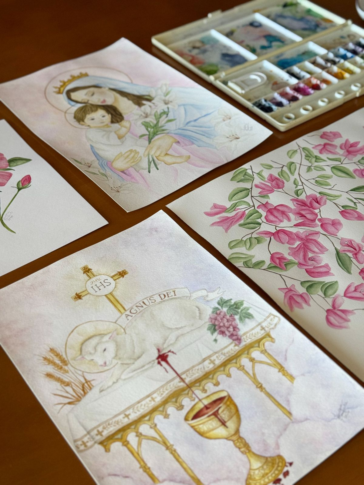
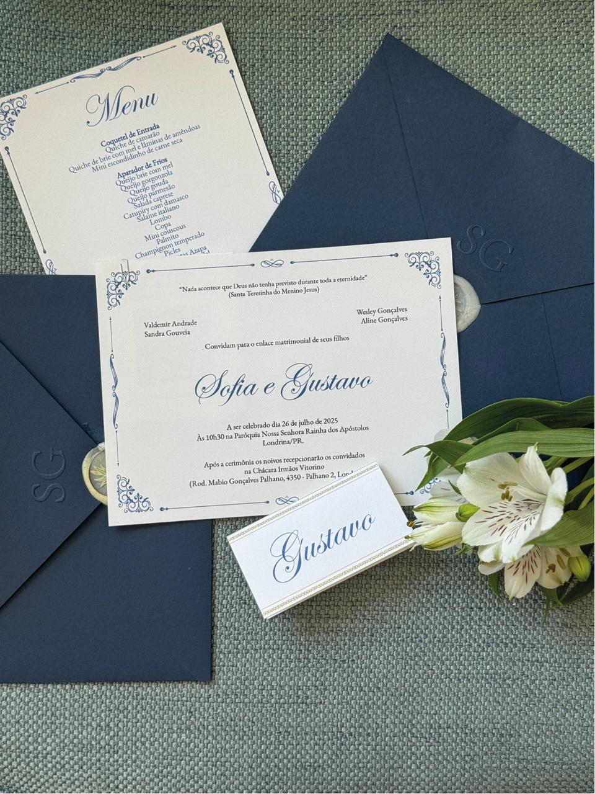
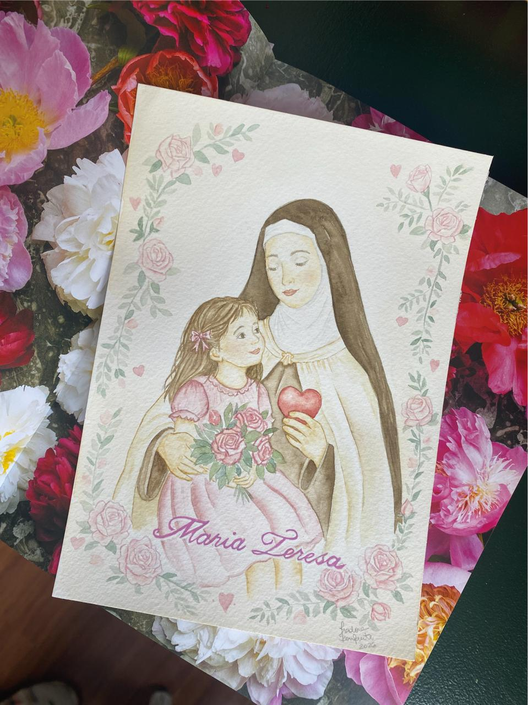
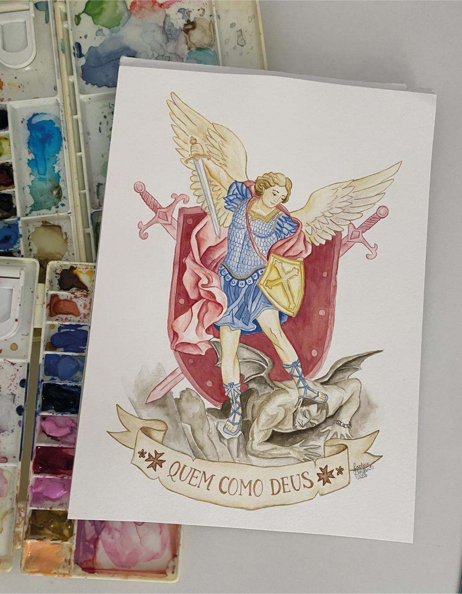
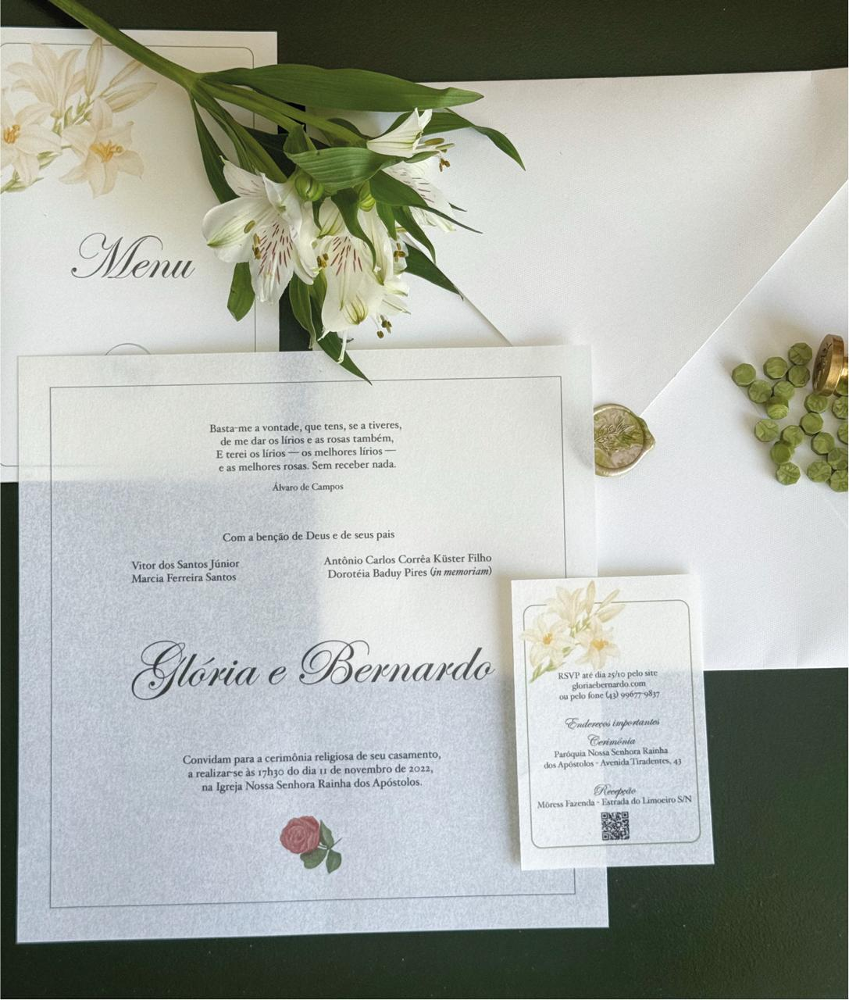
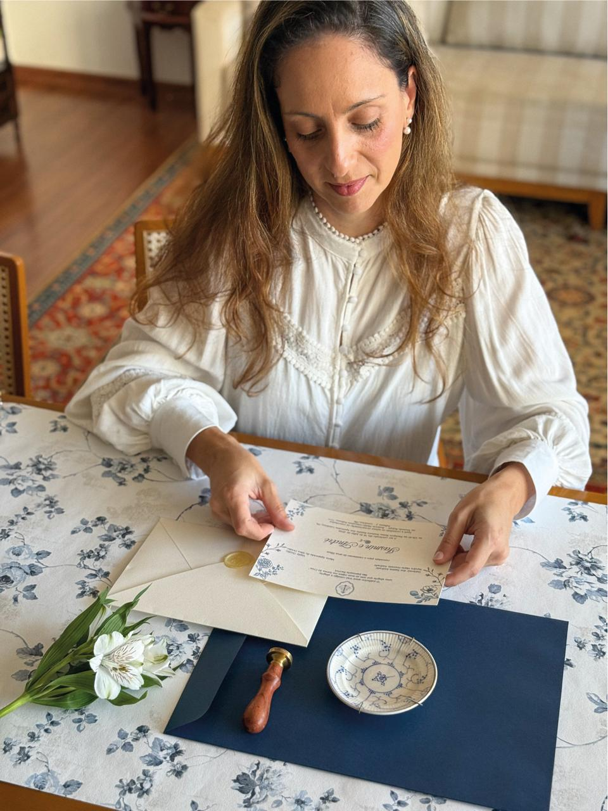
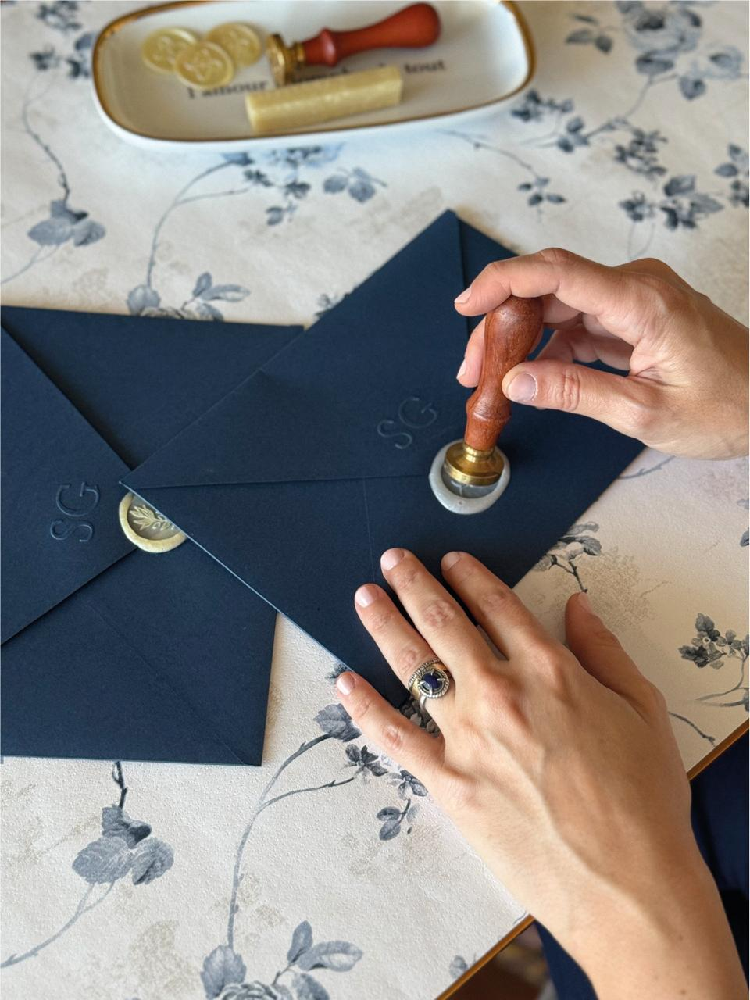

Papelaria de casamento
Convites, save the date, menus, tags, votos e todas as peças que acompanham o grande dia.


Papelaria · aquarela autoral · arte devocional
Aquarela e papelaria autorais criadas com afeto para contar histórias que merecem ser guardadas.
Cada projeto nasce de uma história única. Entre pigmentos e papéis, criamos peças que refletem a sua personalidade e eternizam os momentos inesquecíveis.
Convites, save the date, menus, tags, votos e todas as peças que acompanham o grande dia.
Aquarelas autorais com foco em arte religiosa e delicada.
Uma seleção de ilustrações autorais em tiragens exclusivas para levar arte e fé à sua casa.




Casamentos
Conhecemos sua história, referências e tudo o que torna o momento especial.
Traduzimos a atmosfera desejada em cores, materiais e uma direção visual única.
Cada elemento é aquarelado à mão antes de ser cuidadosamente digitalizado, favorecendo a criação de um layout exclusivo.
Todo processo produtivo é feito de forma exclusiva pelo ateliê, com materiais de alta qualidade e cuidado em cada etapa.

Sou Isadora, artista e fundadora da Magnificat Paper & Co. Há 10 anos trabalho com aquarela e meu desejo de contar histórias através da arte me trouxe até aqui.
Cada projeto é desenvolvido com calma, atenção aos detalhes e muito carinho. Todo processo criativo é manual e exclusivo, e você recebe com a sua arte um pedaço da minha história.
IsadoraHistórias compartilhadas
Quando fiquei noiva, eu sabia que não queria convite pronto. Eu queria alguém que me escutasse, que tivesse boas referências, que se importasse de verdade com os detalhes do meu casamento e foi exatamente isso que encontrei em você.
Minha experiência foi de completa satisfação. Desde o início, você buscou entender o que eu imaginava, ajudou nas decisões e acolheu cada ajuste com muito carinho. O resultado ficou ainda melhor do que eu sonhava e tornou essa fase da minha vida mais bela e especial.
07 · Perguntas frequentes
Recomendamos iniciar entre quatro e seis meses antes do evento. O prazo exato depende da quantidade de peças e dos acabamentos escolhidos.
Sim. As peças são embaladas cuidadosamente e enviadas para todo o país.
Sim. Criamos aquarelas avulsas sob encomenda e também oferecemos reproduções de obras selecionadas.
Sim. Lugares, símbolos, pessoas e memórias podem se tornar uma obra exclusiva.

Seu projeto começa aqui
Conte um pouco sobre a sua história e receba uma proposta pensada especialmente para você.
Solicitar orçamento